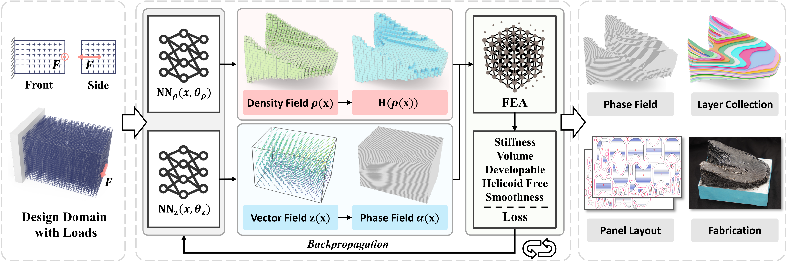
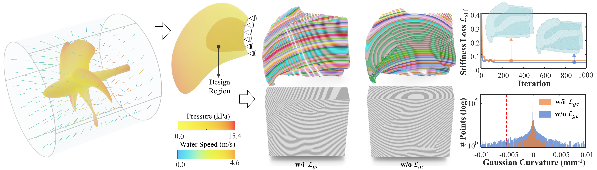
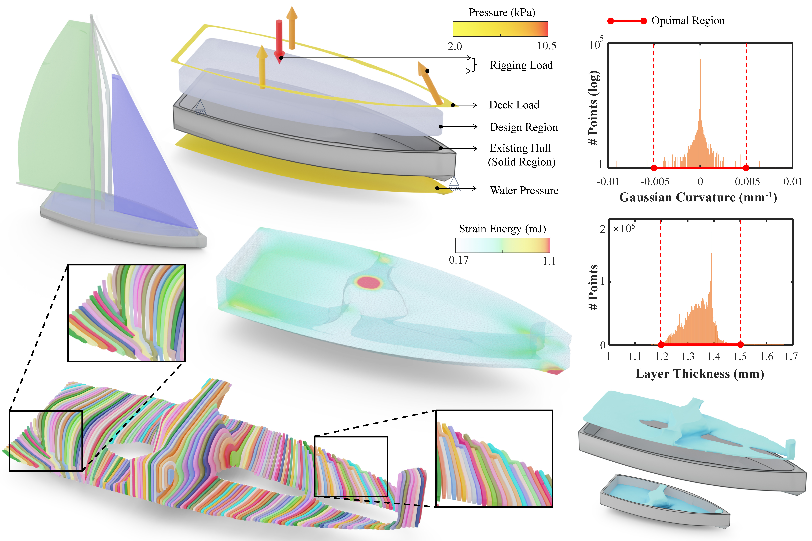
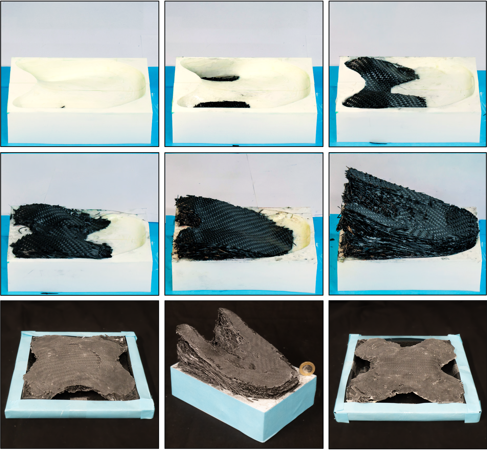
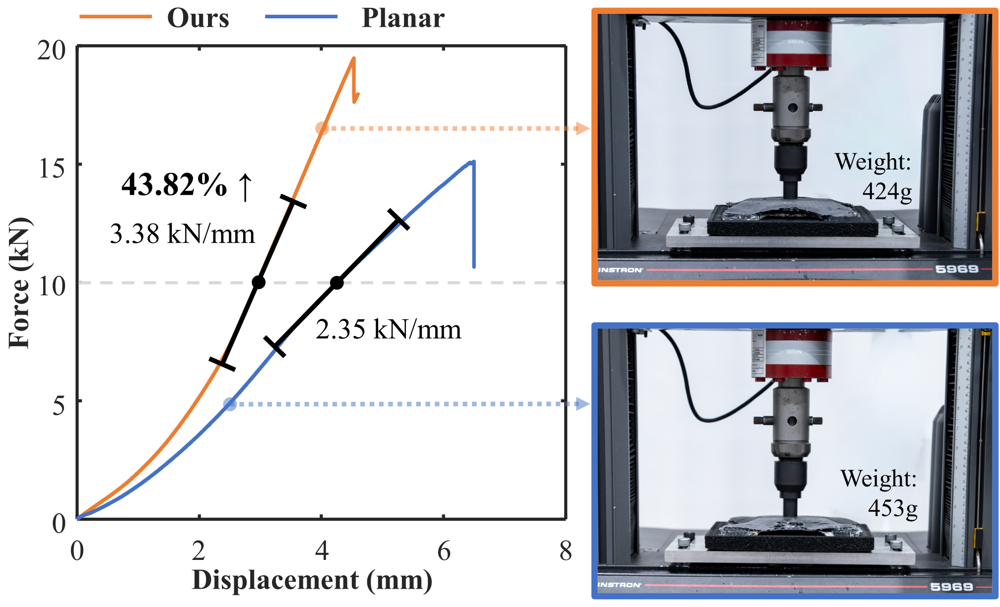

Co-Optimization of Structure and Manufacturable Semi-Continuous Layers for Laminated Composites
The University of Manchester/ Digital Manufacture Lab
Abstract
Method Overview
Computational pipeline of the proposed framework. Two continuous fields -- a density field and a vector field -- are parameterized by neural networks (NN) and jointly optimized in a self-learning loop via backpropagation. Mechanical performance is evaluated through FEA, while manufacturability is enforced using geometry-based loss terms. The optimized fields are then used to extract a collection of curved semi-continuous layers, which are flattened into planar panel layouts for the fabrication of laminated composites.

Results
Co-optimization results for the interior core structure of a laminated-composite propeller: (a) loading conditions and design domain of the propeller, (b) optimized interior structure and curved semi-continuous layers generated by our approach, (c) the ablation study result obtained by disabling the Gaussian curvature loss Lgc, i.e., using ωgc = 0.0, and (d) convergence curves of the stiffness loss Lstf and histograms of Gaussian curvature for cases with and without the Lgc loss.

Results

Overview Figure
Add a method overview showing co-optimization of structure, semi-continuous layers, and manufacturability constraints.

Fabrication / Validation
The fabrication of laminated composites are taken on 3D printed moulds -- see an example of fabrication sequence, and all the physically fabricated models.

Tensile Test
Tensile test results for the Shell model. Specimens fabricated using our curved semi-continuous layers and the conventional planar & parallel layers are tested under compression.
Video
BibTeX
@article{LIU2026cooptimization,
title = {Co-Optimization of Structure and Manufacturable Semi-Continuous Layers for Laminated Composites},
author = {TAO LIU, AORAN LYU, YONGXUE CHEN, YU JIANG, MICHAEL PETTY,and CHARLIE C.L. WANG},
journal = {ACM Transactions on Graphics},
year = {2026}
}
Contact
Tao LIU (tao.liu@manchester.com)
CHARLIE C.L. WANG (charlie.wang@manchester.ac.uk)